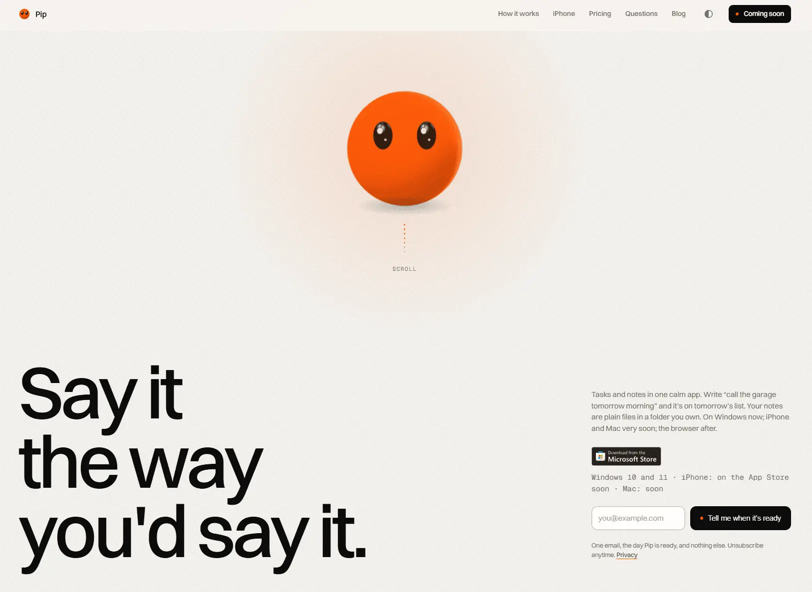

Pip
- Лендинг
- Сервисы и приложения
- Продуктивность
- Обычным пользователям
- Минимализм
- Швейцарская типографика
- Игривый
- Светлая тема
- Нейтральный фон
- Скроллителлинг
- Липкие секции
- Микроанимации
- GSAP
- ScrollTrigger
- Lenis
- Supabase
- Cloudflare
- Switzer
- Lemon Squeezy
- Английский язык
- Великобритания
- Действующий сайт

Что это
Лендинг приложения Pip — задачи и заметки в одном спокойном месте. Фразу «позвонить в гараж завтра утром» приложение само раскладывает на завтрашний список, а заметки хранит обычными файлами в папке, которую выбирает человек. Бесплатно на iPhone, Mac и Windows. Продуманный цепляющий лендинг приложения для ведения задач и заметок. Хорошие анимации по скроллу с оранжевым шариком-маскотом и наглядная демонстрация продукта.
Что смотреть в первую очередь
Смотреть прокрутку от заголовка вниз: шарик ведёт по четырём шагам, а в секции про iPhone оживает собранный из кода телефон.
Приёмы
- Скроллителлинг
- Липкие секции
- Микроанимации
Интересные факты
- Главная — один длинный сценарий: оранжевый шарик с глазами висит в центре, текст сменяется четырьмя шагами, а вокруг шарика постепенно достраивается интерфейс приложения. По коду каждый шаг — отдельная анимация, привязанная к прокрутке, а сцена держится на месте, пока идёт её часть.
- Сцена с iPhone собрана из обычных HTML и CSS, без видео: внутри нарисованного телефона по сценарию отвечает «островок» у верхней кромки, появляется задача и раскрывается список.
- Движение можно отключить: на экранах уже 720 px и при системной настройке «уменьшить движение» вместо сценария показываются статичные кадры — так написано в комментариях к коду.
- Заметки устроены как обычные файлы Markdown в папке, которую человек выбирает сам; на сайте этому посвящена отдельная секция — данные лежат открыто, их можно читать чем угодно.
- Счётчик посещений — Cloudflare Web Analytics: без cookie и без профилирования посетителей, поэтому баннера о согласии на сайте нет.
- Есть тёмная тема: переключатель в шапке, цвета фона для светлой и тёмной системной темы прописаны в разметке сразу.
Паспорт
- Домен
- pipdot.app
- Тип сайта
- Лендинг
- Категории
- Сервисы и приложения
- Подкатегории
- Продуктивность
- Для кого
- Обычным пользователям
- Стиль
- Минимализм, Швейцарская типографика, Игривый
- Язык
- Английский
- Страна
- Великобритания
- Автор
- Catalin Vintila — частный разработчик
- Год
- 2026
- Добавлен в коллекцию
- 08.11.2026
Палитра
-
#F2EEEA— 93% кадра -
#0D0C0B— 4% кадра -
#F35609— 2% кадра -
#C9C5C0— 1% кадра -
#9C9A97— 1% кадра
- Режим
- Светлая
- Цвет фона
- Нейтральный
Технологии
- GSAP
- ScrollTrigger
- Lenis
- Supabase
- Cloudflare
- Cloudflare Web Analytics
- Switzer и Geist Mono
- Lemon Squeezy